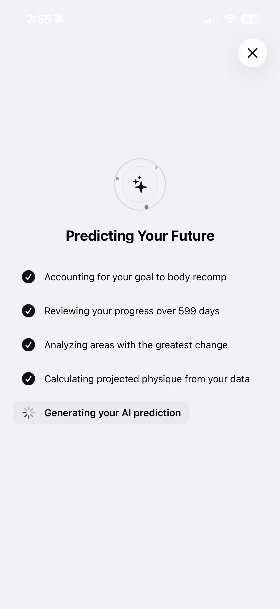
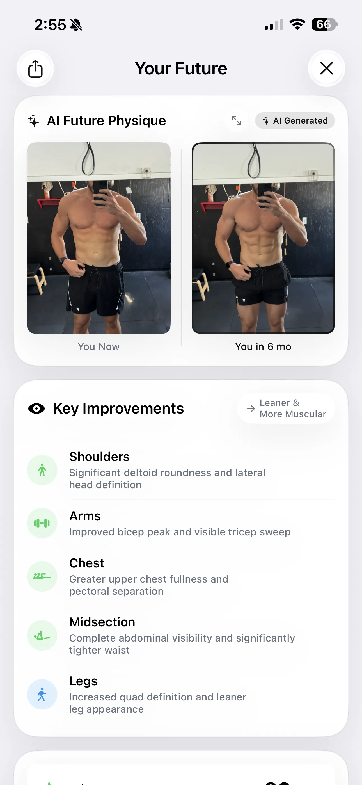
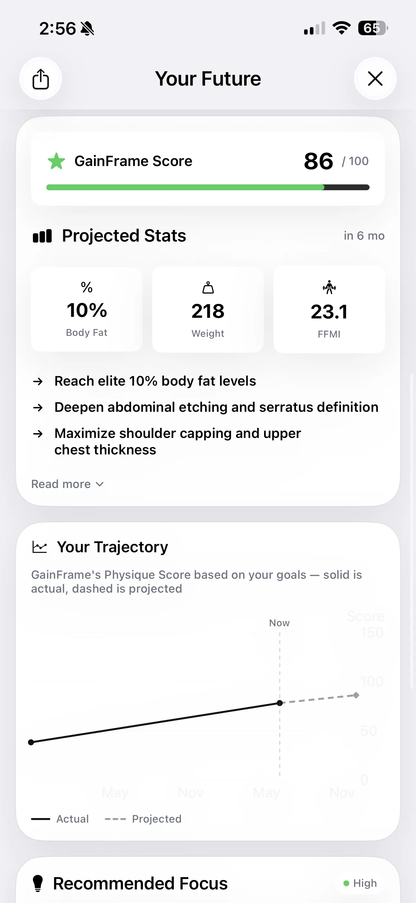
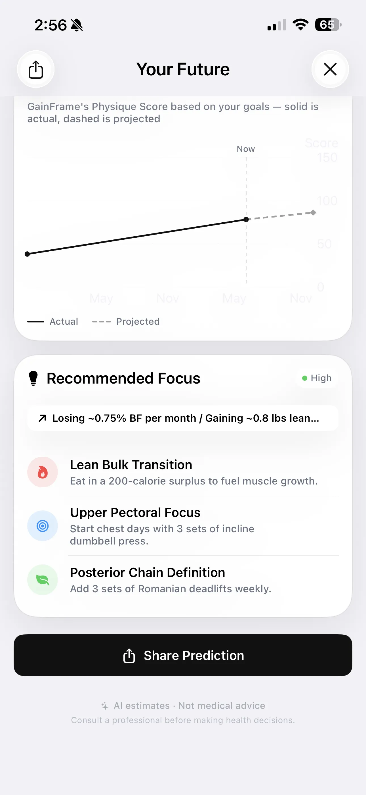
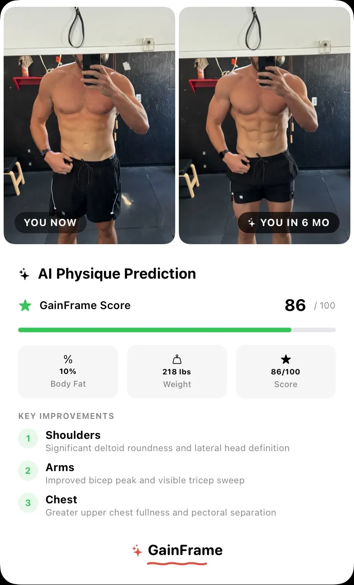

Behind the Prediction: How GainFrame Calculates Your Future Physique
It's not a generic filter. It's a personalized roadmap built from your historical progress. Here is a look under the hood at how our AI engine turns your camera roll into actionable data.
The beta is live — try it free.
Join the Beta on TestFlightHow does an AI physique prediction actually work? We've all seen the gimmicky photo and face-swap apps. You upload a single selfie, tap a button, and suddenly you look like a shredded comic book hero. It's fun for five seconds, but it's utterly useless for your actual training.
When we built the Future Physique feature for GainFrame, we had one rule: no generic templates. If you are going to base your diet and training off a projection, that projection has to be anchored in reality. It has to be built from your data, your frame, and your demonstrated rate of progress.
Here is an inside look at how GainFrame's AI engine actually calculates your trajectory, visualizes your future, and gives you the exact numbers you need to hit your goals.
Step 1: The AI physique prediction engine (your history)
A single photo only tells the engine what you look like today. To figure out where you are going, the AI needs to know where you have been. This is why GainFrame requires historical data to generate a highly accurate prediction.

When you initiate a prediction, the engine doesn't just look at the photo you just took.
- It reviews your history: For example, it might analyze exactly how your body has changed over the last 599 days.
- It analyzes regional changes: It isolates your shoulders, chest, arms, midsection, and back to see which muscle groups are responding best to your current training.
- It accounts for your goal: Are you trying to cut, bulk, or body recomp? The AI adjusts the projection parameters based on your stated objective.
By determining your personalized rate of change across multiple data points, the AI isn't guessing; it's extrapolating a statistically probable outcome.
Step 2: The Visual Projection
Once the math is done, the engine renders the visual result. This isn't about slapping 3D abs onto your torso. It is a highly specific rendering of you, further along your current trajectory.

Look at the specific improvements called out by the engine in the 6-month prediction above:
- Shoulders: Significant deltoid roundness and lateral head definition.
- Arms: Improved bicep peak and visible tricep sweep.
- Midsection: Complete abdominal visibility and significantly tighter waist.
These callouts aren't random. They are the exact areas where the AI has observed your fastest historical growth, projected forward.
Step 3: The Hard Numbers
Visuals are motivating, but numbers track progress. GainFrame doesn't leave you with just a picture; it gives you the specific metrics you'll achieve if you stay the course.

The Projected Stats section breaks down your future state into hard targets: reaching elite 10% body fat levels, hitting a body weight of 218 lbs, and pushing your FFMI (Fat-Free Mass Index) to 23.1.
The Trajectory Graph is perhaps the most important tool here. It plots your GainFrame Physique Score over time. The solid line is reality—what you have already achieved. The dashed line is the future. It visually proves that the day-to-day fluctuations in the scale don't matter as long as the trend is moving up and to the right.
Step 4: The Action Plan
Knowing what you could look like is only half the battle. You need to know exactly what to do when you walk into the gym tomorrow to make it reality.

This is where GainFrame bridges the gap between tracking and coaching. Based on your weakest muscle groups and furthest goals, the AI provides a Recommended Focus plan.
If your upper chest is lagging behind your lateral delts, you won't get generic advice like "work out harder." You will get targeted, actionable directives: "Upper Pectoral Focus: Start chest days with 3 sets of incline dumbbell press." Need more hamstring sweep? "Posterior Chain Definition: Add 3 sets of Romanian deadlifts weekly."
Step 5: Accountability
Finally, we built the ability to export and share your prediction. When you vocalize a goal and show people exactly what you are aiming for, you mentally commit to it.

Export Options
GainFrame allows you to export your prediction in a clean, shareable card. You can toggle specific export options—Stats, Narrative, and Score—depending on what you want to share with your coach, your training partner, or your social feed.
By putting the "You in 6 months" picture on your lock screen, you eliminate the friction between your current actions and your future goals. Every time you open your phone, you know exactly what you are working towards.
Stop Guessing. Start Predicting.
You are already putting in the hours. You are already eating the meals. Don't leave your results up to guesswork. Use a tool that turns your hard work into predictable, measurable outcomes. Learn more about your AI physique score or see how the AI body composition analysis works.
Related posts
- Future Physique: See Where Your Body Is Headed
- Understanding Your AI Physique Score
- Deep Dive Compare: Quantify Exactly What Changed
- 5 Tips for Better Progress Photos
Try GainFrame free
AI body composition from your progress photos. No account needed.
Join the Beta on TestFlightRequires iOS 17+ · iPhone only